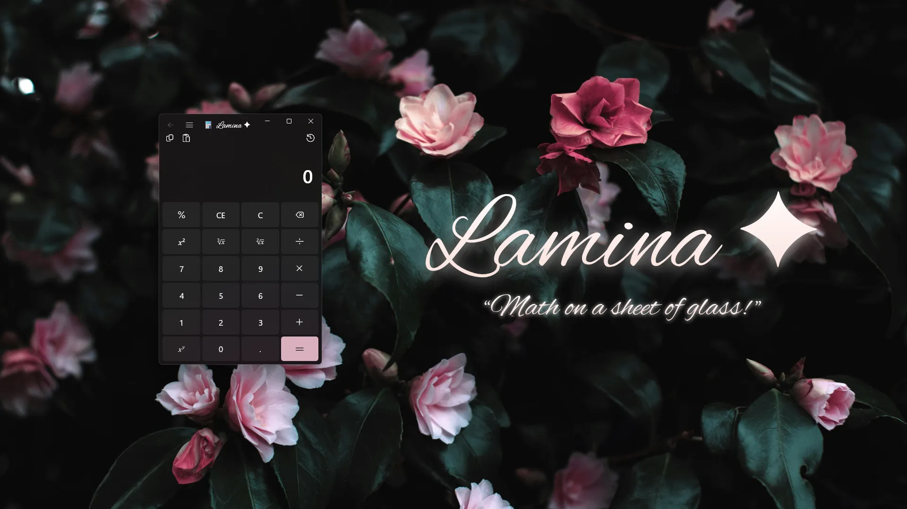
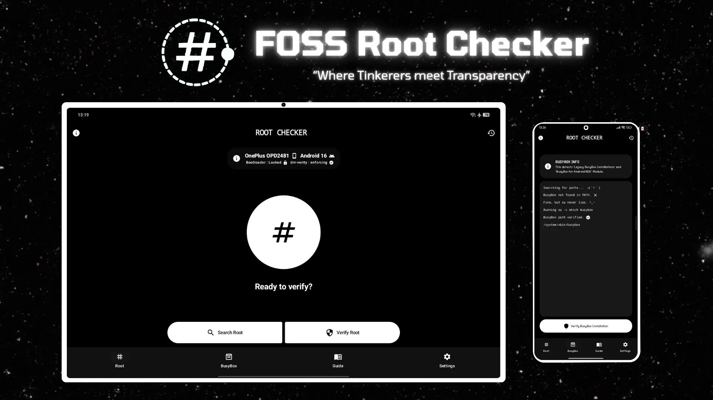
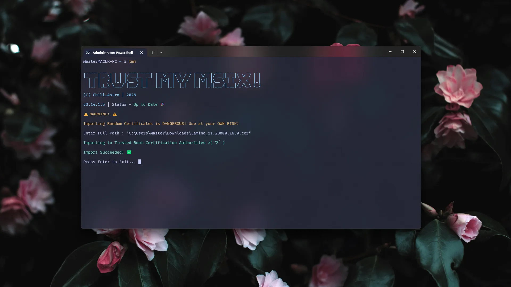

FOSS App Centre
Lamina ✦ Loading…


A FOSS WinUI 3 Calculator, extendible using Built-in and User-Made Scripties. Built-in Scripties powered by C# & XAML. User-Made Scripties powered by NCalc and distributed in JSON (.lamina) files storing NCalc Expressions. Such Files are imported by Dynamo Scripties Manager, which Dynamically generates the UI.
FOSS Root Checker Loading…


Finally, an Open Source Root Checker! For Android 6 and Higher. Includes a Search Root Button to search for Root Traces in 40+ System Paths, Verify Root executes su -c id to Verify Root Access if UID 0 is returned. A Busybox Checker has also be Included alongside a Comprehensive Rooting Guide.
Trust My Msix! Loading…


A CLI Tool for Windows used to Speed up the process of certificate importing for Self-Signed Msix Packages. This App uses the Command certutil -addstore Root path and gives a neater command tmm --i path for User Friendliness.